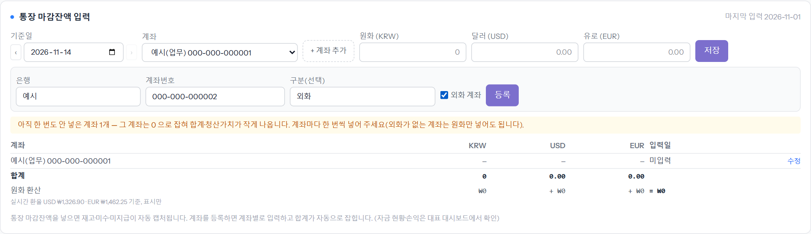
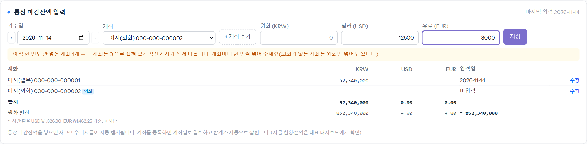
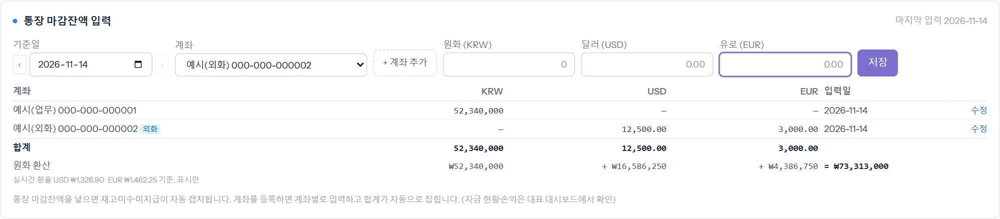

하루 업무를 마치면 통장 마감 잔액을 계좌별로 넣습니다. 넣는 순간 그날의 재고 · 미수 · 미지급이 함께 기록되어 대표에게 가는 자금 보고(매주 월요일 9시 알림톡)와 대표 대시보드의 자금 현황에 쓰입니다. 화면은 대시보드의 「통장 마감잔액 입력」 카드입니다. 예시 계좌 번호는 가짜입니다.
외화가 들어오는 계좌는 「외화 계좌」에 체크합니다. 등록한 계좌는 아래 표에 한 줄씩 생기고, 아직 한 번도 안 넣은 계좌가 있으면 노란 안내가 뜹니다(그 계좌는 0 으로 잡혀 합계가 작게 나옵니다).

기준일은 오늘이 기본이고 ‹ › 로 하루씩 옮깁니다. 그 계좌에 있는 통화 칸만 넣으면 됩니다(외화가 없는 계좌는 원화만). 계좌를 바꿔 가며 하나씩 저장합니다.

계좌별 값 · 합계 · 원화 환산(실시간 환율, 표시만)이 나옵니다. 잘못 넣었으면 그 줄의 [수정]으로 고치거나 그 날짜 기록을 지우고 다시 넣습니다.
